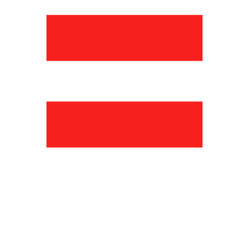

Müşterilerin nerede kaybedildiğini buluyoruz
Gösterim, tıklama, sepete ekleme, sipariş ve tamamlanan alışverişleri inceliyoruz. Zayıf aşamaları belirliyor; içerik sorunlarını fiyat, stok, teslimat ve reklam etkilerinden ayırıyoruz.

KREAMETRIKAKartvizite dön05Pazaryerleri ve e-ticaret
Ozon ve Wildberries için satış hunisini analiz ediyor, ürün sayfalarını geliştiriyor ve keşiften satın almaya uzanan süreçteki engelleri belirliyoruz.
Dönüşüm analizi · hesap analizi · ürün SEO’su · içerik ve tasarım
Verilerle desteklenen bulgular, öncelik sırasına göre bir aksiyon planı ve değişiklikleri değerlendirecek metrikler sunuyoruz. Tek bir ürün sayfasıyla başlayabilir, çalışmayı ürün grubuna veya tüm hesaba genişletebilirsiniz.
Gösterim, tıklama, sepete ekleme, sipariş ve tamamlanan alışverişleri inceliyoruz. Zayıf aşamaları belirliyor; içerik sorunlarını fiyat, stok, teslimat ve reklam etkilerinden ayırıyoruz.
SKU ve kategori bazında satışları, rakipleri, puanları, yorumları ve müşteri sorularını analiz ediyoruz. Platform içi reklam harcamalarını, bunların satış gelirine oranını ve veri varsa birim ekonomisini değerlendiriyoruz.
Arama sorgularını ve rakipleri araştırıyor; başlıkları, özellikleri ve açıklamaları iyileştiriyoruz. İçeriği müşterinin arama niyetiyle eşleştiriyor, değişiklik öncesi ve sonrası görünürlüğü ve dönüşümü ölçüyoruz.
Kapak görselini, görsel galerisini ve metinleri müşteri soruları ve tercih nedenleri etrafında kurguluyoruz. Tasarım yönergeleri hazırlıyor, sağladığınız materyallerden yayına hazır içerikler oluşturuyoruz.
İş kapsamını ve başlangıç metriklerini netleştiriyor; tıklama oranını, sepete ekleme dönüşümünü ve satışları izliyoruz. Benzer dönemleri karşılaştırırken kampanyaları, mevsimselliği ve stok durumunu dikkate alıyoruz.
Güzellik ve kozmetik deneyimimizle ürünün konumlandırmasını, belirtilen faydalarını, kullanımını ve müşteri endişelerini inceliyoruz. Talep üzerine örnek çalışmalarımızı paylaşabilir, kategorinize özel öneriler sunabiliriz.
Ürün veya mağaza bağlantınızı gönderin. Dönüşüm analizi, kapsamlı hesap analizi ya da ürün sayfasının baştan tasarlanması için uygun başlangıcı birlikte belirleyelim.
creametrica@yandex.ruMağaza veya ürün bağlantısını ve mevcut satış durumunuzu gönderin.
Ücretsiz 30–40 dakikalık uzman görüşmesinde 1–2 ürün sayfasına bakıp iş kapsamını belirleyelim.
Başlamadan önce kapsamı, ücreti ve değerlendirme metriklerini kararlaştıralım.
Hizmetlerimizi ayrıntılı olarak anlattığımız bir Rusça tanıtım sayfamız var. İleride Türkçe sürümünü de hazırlamayı planlıyoruz. Şimdilik bu sayfada yaklaşımımızı ve hizmetlerimizi bulabilirsiniz.
Ayrıntılı sayfayı inceleyin · Rusça